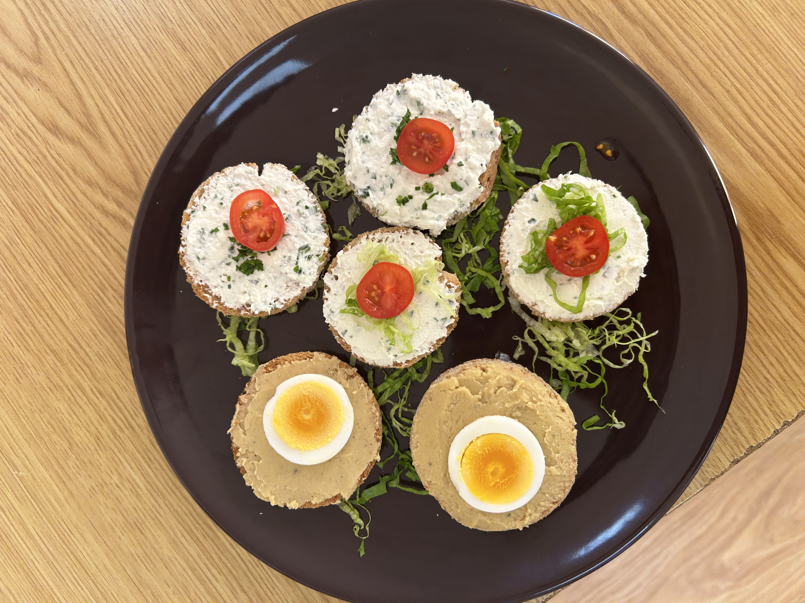
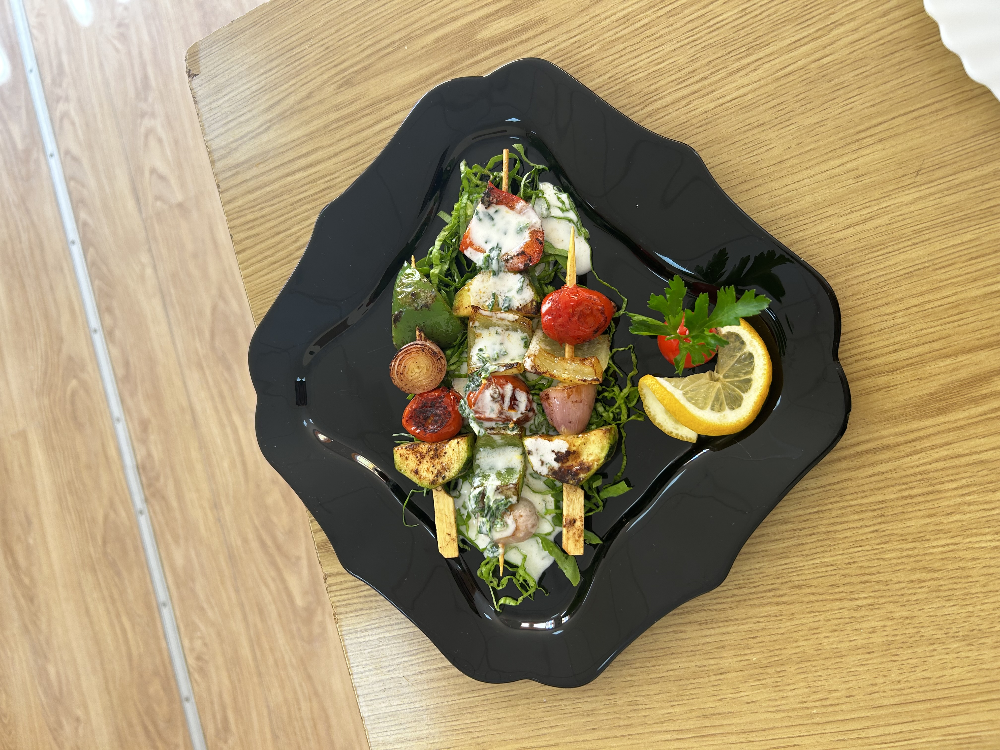
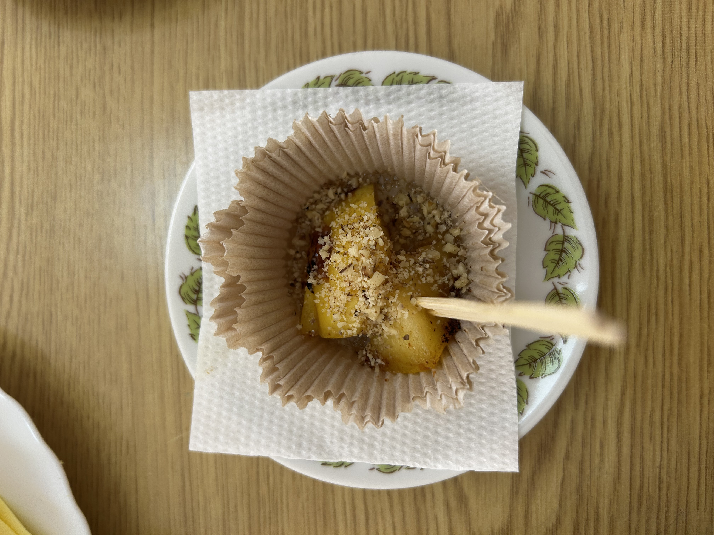
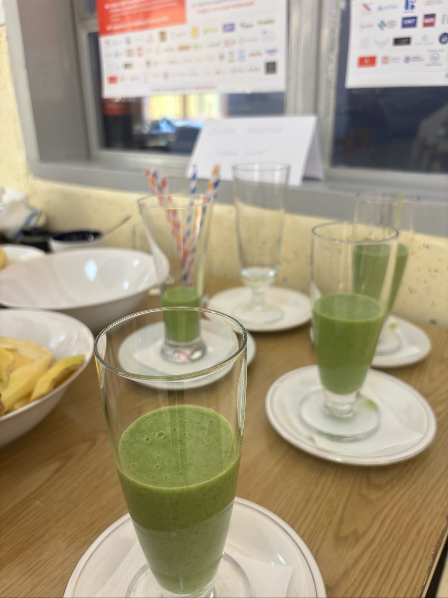
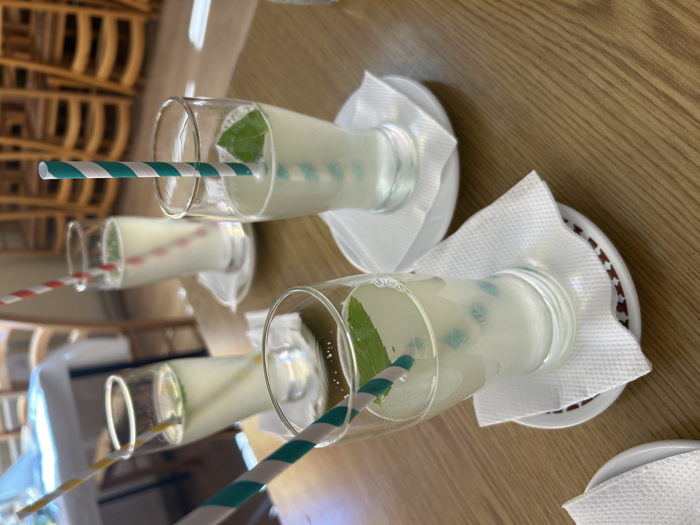

Mala, kreativna jela koja se mogu jesti „s nogu“, izrađena od lokalnih i sezonskih namirnica uz minimalan otpad.

Mini peciva od integralnog brašna i sjemenki punjena domaćim namazom.
Namirnice: integralno brašno, sjemenke, sir, humus
Poruka: manje otpada, više hranjivih tvari

Pečeno povrće s umakom od jogurta i začinskog bilja.
Poruka: sezonsko povrće iz školskog vrta

Pečene jabuke s medom i orasima.
Poruka: prirodni šećeri bez plastike

Banana, špinat, jabuka i med.
Zdravlje: vitamini i vlakna

Limunada s mentom poslužena u višekratnim čašama.